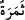

“İki bağın ikisi de yemişlerini vermiş,” tam yenilecek kıvama ulaşmış, diğer
bahçelerde olduğu gibi ondan “hiçbirini eksik bırakmamıştı.” Çünkü diğer bahçelerde
genellikle meyveler bir sene bol, bir sene de az olur. Bazı ağaçların da bazı senelerde
meyvesi bol olur, bazısında olmaz.
“İkisinin arasından” bu iki bahçenin her birinde devamlı sulanmaları ve değerlerinin
artması için “bir de ırmak fışkırtmıştık.” Herhalde -dış dünyada sıralama bunun aksine
olduğu halde- önce yemişlerini vermesinin, sonra da ırmak fışkırtmanın zikredilmesi,
onların bahçelerin güzelliğini teminde birbirinden bağımsız olduklarını bildirmek
içindir. Aksi olsaydı onların birbirini izleyen tek bir nimet olduğu anlaşılırdı. Çünkü
bahçelerin yemiş vermesi genellikle sulamaya bağlıdır. Ayrıca burada bu bahçelerin
yemiş vermesinin sulamaya bağlı olmadığına işaret vardır. Nitekim şu âyet de buna
benzer: “Öyle mübarek bir ağaç ki nerdeyse ateş değmese de yağı ışık verir, parıldır.”
(en-Nûr, 24/35)
34. Bu adamın başka geliri de vardı. Bu yüzden arkadaşıyla konuşurken ona şöyle
dedi: “Ben, servetçe senden daha zenginim; insan sayısı bakımından da senden
daha güçlüyüm.”
İki bağın sâhibi olan “Bu adamın başka geliri de vardı.” Zikredilen bahçelerin
gelirlerinden başka muhtelif malları da vardı.
Şeyh, tefsirinde der ki: “__WORD__ Semer” kelimesi, “__WORD__ semere”nin çoğuludur ve
toplanmış meyve demektir. Bahçeler meyvesiz olmadığı halde meyvelerin açıkça
zikredilmesi, o iki bahçedeki meyve ve diğer ürünlerin çok olduğunu bildirmek içindir.”
Kâşifî bu ifâde hakkında der ki: “Üzüm, hurma ve diğer meyvelerin hepsi mevcuttu,
demektir. Bu meyvelerin özellikle zikredilmeleri çok olmaları sebebiyledir.”
“Bu yüzden arkadaşıyla” yâni mü’min kardeşiyle “konuşurken ona şöyle dedi:”
Kâşifî der ki: “yâni o iki bostanın sâhibi kâfir, mü’min olan kardeşiyle mücâdele etti ve
ona şöyle cevap verdi:” “Ben, servetçe senden daha zenginim”
Muhammed b. Hasan (r.h.) şöyle der: “Mal, insanların sahip oldukları dirhem, dinar,
altın, gümüş, buğday, ekmek, hayvan, elbise, silah ve benzeri şeylerdir.”
“İvffnsan sayısı bakımından da” yâni ihtişamım, yardımcılarım ve erkek evladlarım
bakımından da “senden güçlüyüm” dedi. Çünkü, erkek evladları onunla birlikte
bulunmaktaydı, kızla değil. ““__WORD__ Nefer” sayıları üç ile on arasında olan adamlara denir.
Ondan yukarısı için bu tâbir kullanılmaz.
Fakir (Bursevî) der ki: Burada bir anlaşılmazlık olduğu gönlüme doğdu. Eğer âyetteki
“daha zengin” ve “daha güçlü” ifâdeleri gerçek mânâda üstünlük (tafdîl) anlamında